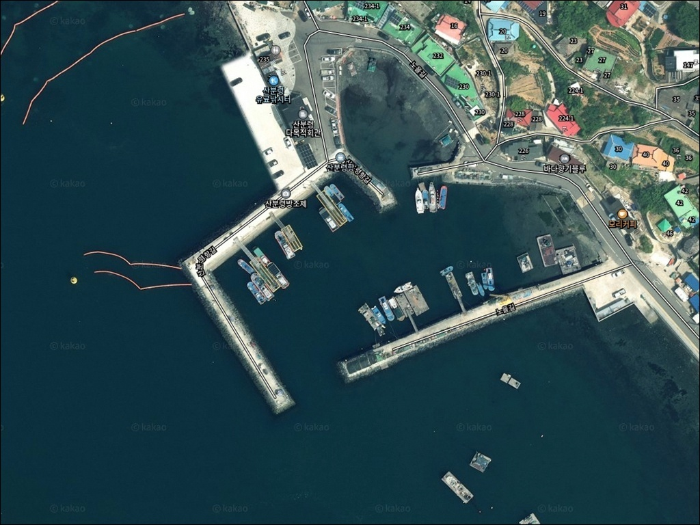
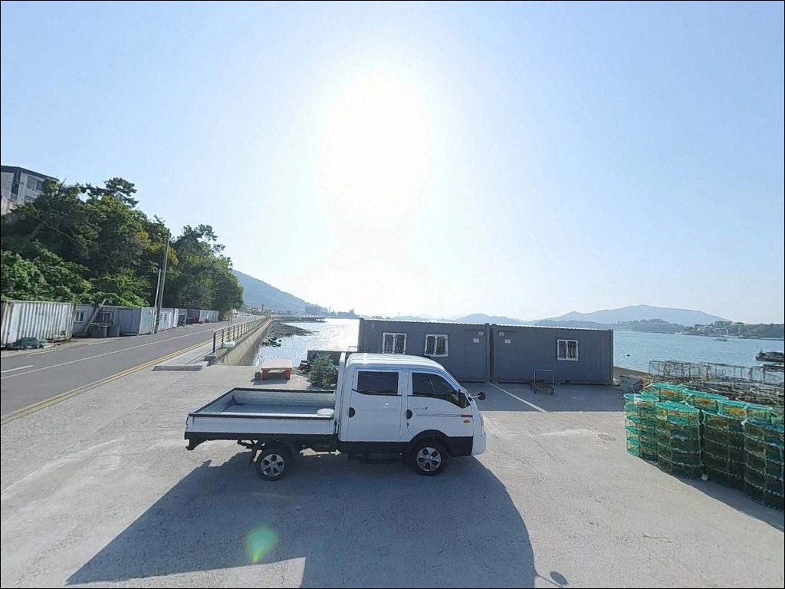
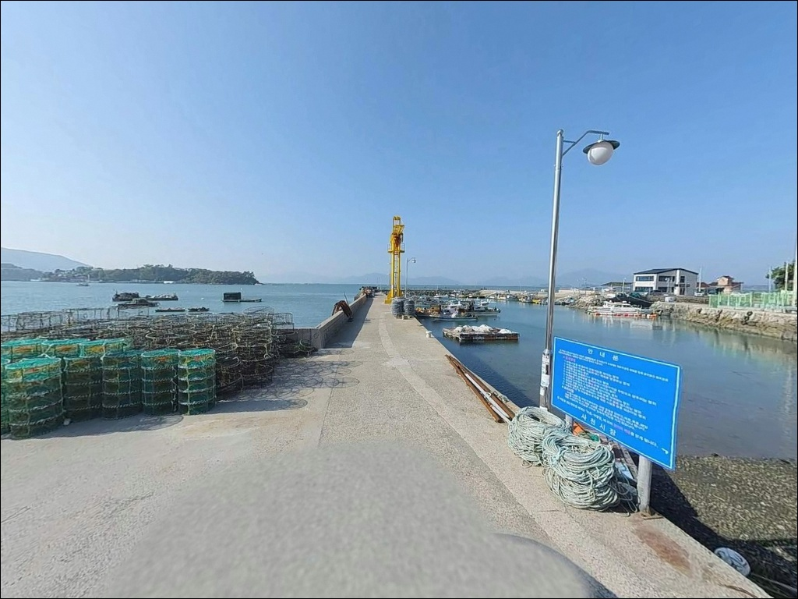
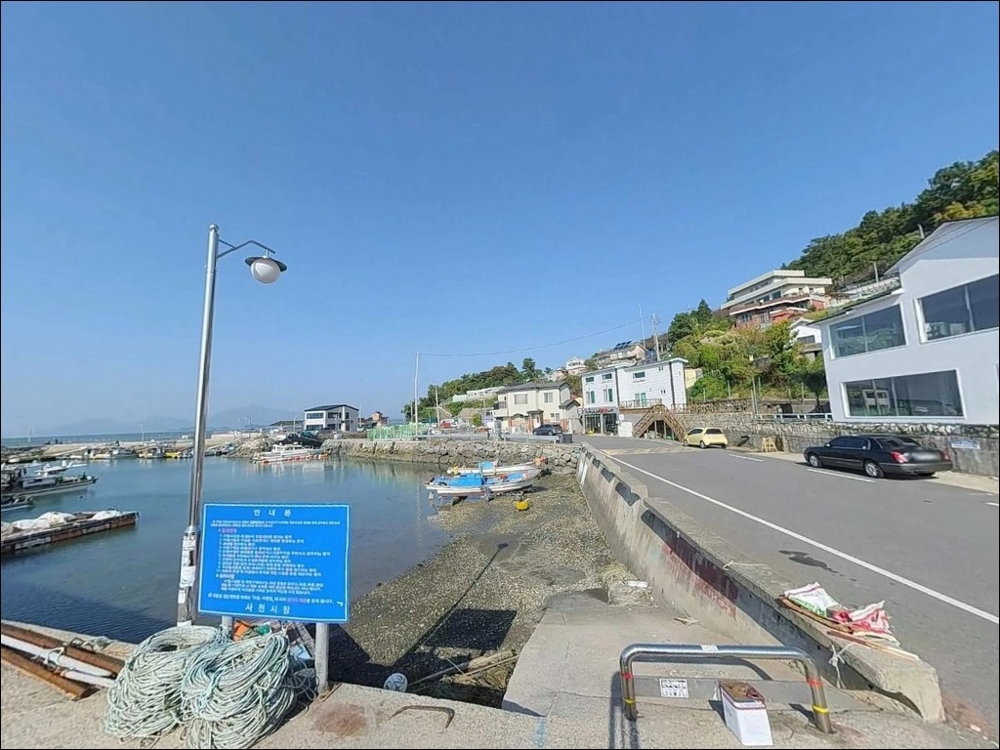
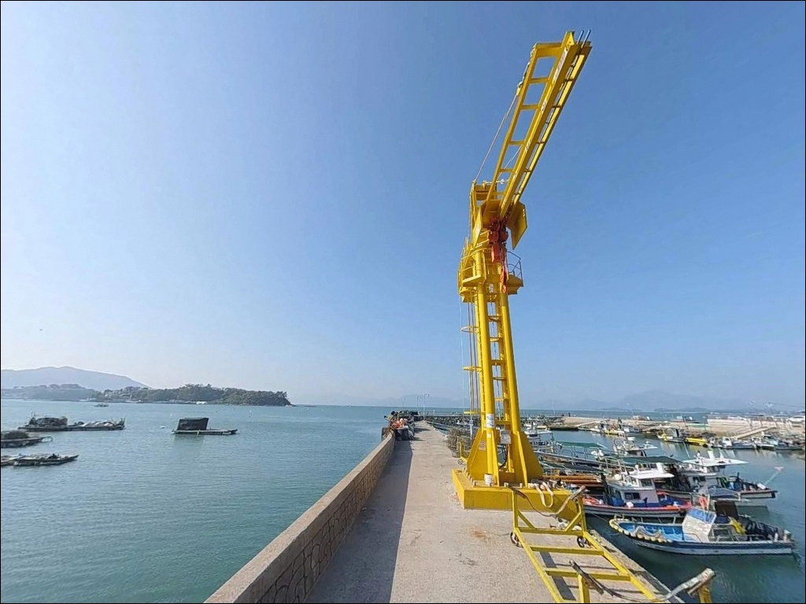
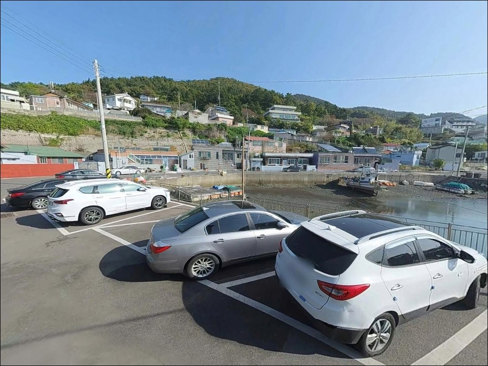
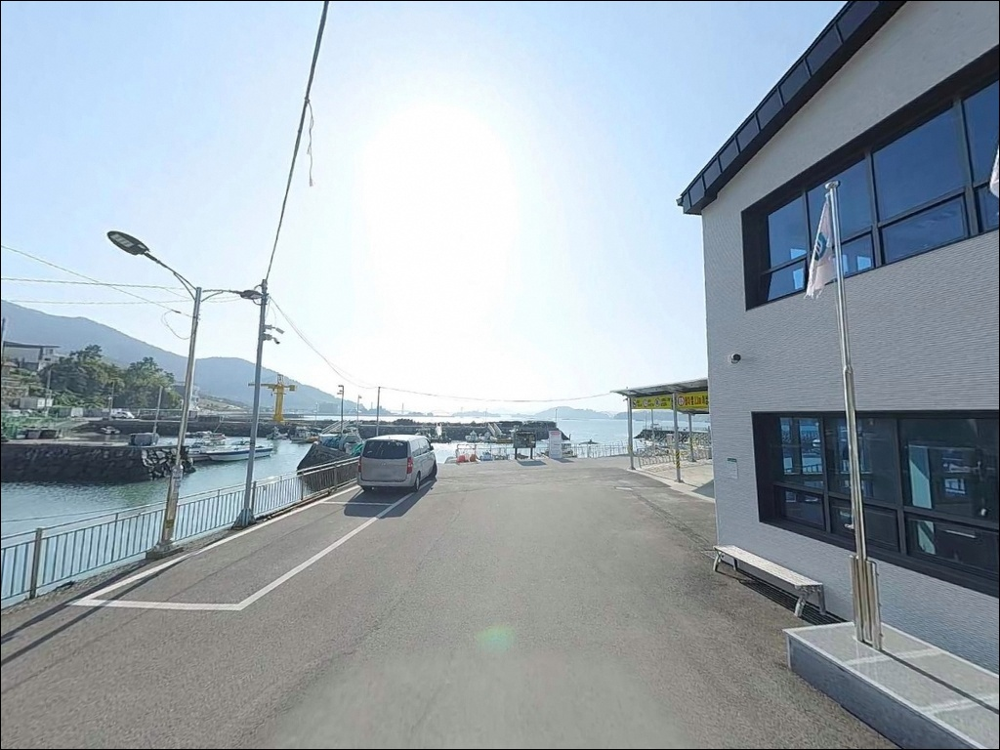
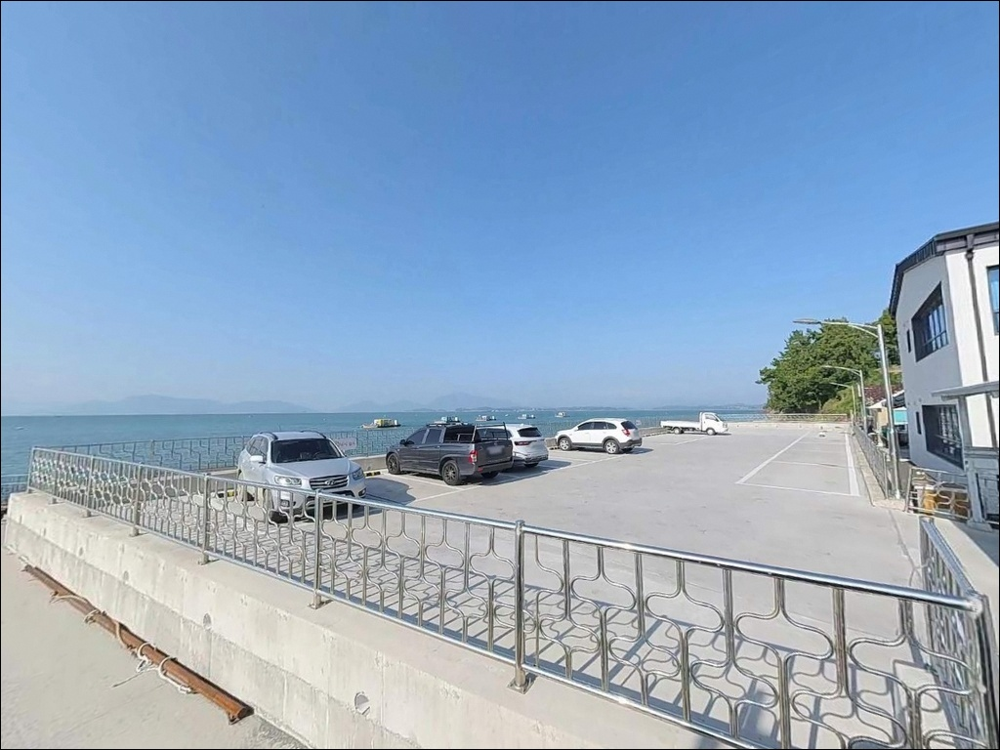
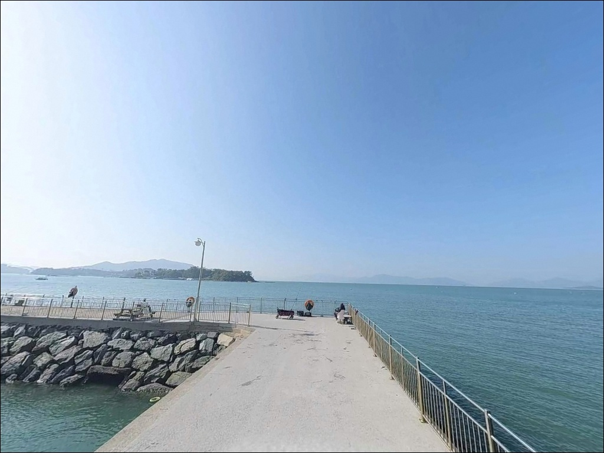

혼자 밤낚시 갔다가 막힐 때, 사천 산분령항 방파제 2인 이상 입장 조건
이 페이지에는 광고(제휴 링크 포함)가 있으며, 광고 링크를 통해 구매하면 운영자가 판매 수익 또는 수수료를 받을 수 있습니다. 포인트 사진: 카카오맵 스카이뷰·로드뷰. 이 페이지의 지도·사진 이미지는 카카오맵의 실제 서비스 이미지와 다를 수 있습니다.


포인트 안내
산분령항
경남 사천시 실안동 1096-38
산분령항은 어촌계 직영 유료 낚시터입니다.
방파제 입장 시 1인 5,000원의 이용료가 발생하며,
좌대는 별도 요금과 예약이 필요한 구조입니다.
채비를 다 갖추고 현장에 도착해도
유료 구역 운영 방식을 모르면
낚시 자리 확보에서부터 계획이 틀어집니다.
사천만 북단 실안해안도로 끝자락에 자리한 이 항구는
마동도·저도 같은 작은 섬들이
외해 영향을 막아주는 내만형 구조로,
파도보다 조류 타이밍이 조과를 가르는 포인트입니다.
들물 전후 조류가 살아날 때
방파제 외항과 좌대 주변에서
바닥 어종 반응이 집중됩니다.
이 글은 산분령항의
유료 시설 구조, 진입 환경, 낚시 방식별 여건,
차박 체류 조건에 집중합니다.
조황 단정이나 특정 어종 보장은
이 글의 범위에 포함되지 않습니다.

1. 진입 동선과 현장 접근성
실안해안도로, 즉 실안노을길을 따라
끝까지 진행하면 산분령항에 닿습니다.
사천IC에서 3번 국도를 타고
사천 방면으로 15~20분 직진한 뒤
터널 통과 후 200m 지점에서
우회전해 해안도로를 따라 이동하면 됩니다.
도로 전 구간이 포장된 왕복 2차선이라
캠핑카 진입에도 무리가 없는 수준입니다.
산분령항은 해안도로 끝자락에 위치해
통과 차량이 거의 없는 구조입니다.
항 내 물양장과 주차 부지에
약 40대 규모의 주차 공간이 확보되어 있으며,
평지 구조라 회차도 자유롭습니다.
다만 대형 캠핑카는 위성지도로
항 진입부 회차 공간을 사전에 확인하는 편이
안전합니다.
낚시터 관리사무소와 주차장이 인접해 있어
입장권 구매와 자리 확보가
한 동선에서 이뤄집니다.
유료 낚시터 이용객 이외의 차량이
주차 공간을 점유하는 상황을
피하는 것이 현장 매너입니다.

2. 차박 환경과 야간 체류 여건
산분령마을은 38가구 규모의 소규모 어촌입니다.
해안도로 끝자락 특성상
야간 통과 차량이 거의 없어
프라이버시는 상대적으로 양호한 편입니다.
관광 코스인 실안노을길과 인접해
주차장 주변에 기본적인 가로등이 설치되어 있으며,
완전 암흑 환경은 아닙니다.
사천만 내만 구조라 외해 파도 영향은 제한적이지만,
바람 방향에 따라 체류 환경이 달라지는 편입니다.
낚시를 마치고 조용히 하룻밤 머무는 용도로는
나쁘지 않은 조건이며,
건너편 사천대교와 야경이 어우러지는
실안 낙조 조망이 차박 여행자에게
부가적인 매력으로 꼽힙니다.
유료 낚시터는 야간 운영(17:00~08:00) 시간이
별도로 운영됩니다.
야간 방파제 구역은 2인 이상만 입장이 가능하며,
단독 입장은 낚시터 규정상 허용되지 않습니다.
차박과 낚시를 함께 계획한다면
동행 인원을 미리 확정하는 것이
기본 준비 사항입니다.


3. 주변 편의시설 및 인프라 현황
실안해안도로 구간 자체에는
편의점이나 주유소가 없습니다.
산분령항까지는 사천대교 방향으로 나가야만
편의 인프라에 접근이 가능한 구조입니다.
출발 전 식수·연료·낚시 소품을 완비하고
현장에 진입하는 것이
현실적인 준비 방식입니다.
유료 낚시터 매점에서
기본적인 낚시 소품 일부를 구매할 수 있습니다.
반경 10km 이내 삼천포 권역으로 이동하면
홈플러스와 전통시장, 낚시 전문점이 밀집해 있어
부족한 장비는 이 동선을 활용할 수 있습니다.
사천 케이블카 관광권이 인근에 형성되어 있어
주말에는 외지 방문객 차량이 많은 편입니다.

4. 방문 전에 챙겨야 할 준비사항
산분령항 방문 전 가장 먼저 확인할 것은
유료 낚시터 이용 방식입니다.
방파제 입장료는 1인 5,000원이며,
좌대는 주간 기준 1인 20,000원,
2인 이상은 1인당 15,000원입니다.
야간은 2인 기준 50,000원,
3인 이상은 1인당 20,000원이 적용됩니다.
좌대 독채 이용(주간 150,000원, 야간 200,000원)은
사전 예약이 필수입니다.
물때 확인도 빠뜨릴 수 없습니다.
사천만 내만 구조상 들물 전후로
방파제 외항 쪽에서 조류가 살아나면
바닥 어종과 중상층 어종의 반응이
각기 다른 타이밍에 집중됩니다.
바다타임에서 사천·삼천포 기준 물때를 확인하고
들물 전환 타이밍에 맞춰 입장하는 것이
기본 전략입니다.
기상 변화 확인도 중요합니다.
좌대 이용은 기상 악화 시 제한되므로
출발 전 낚시터에 사전 연락해
이용 가능 여부를 먼저 확인하는 편이 좋습니다.
방파제 석축과 테트라포드 구간은
미끄러움이 있으므로
구명조끼와 미끄럼 방지 신발은
필수 준비물입니다.

5. 지형 기반 낚시 여건 분석
산분령항은 사천만 내만 구조의 항구입니다.
앞바다에 마동도·저도가 위치해
외해 직접 노출 없이 조류가 안정적으로 흐릅니다.
방파제 길이는 약 100m이며,
외항 측에는 테트라포드가 설치된
콘크리트 방파제 구조로
방파제 본체에서 직접 낚시가 가능합니다.
수심은 방파제 연안 2~5m 수준이나
방파제 끝단과 전방 물골 구간에서
7~10m 이상으로 깊어지는 지점이 형성됩니다.
바닥은 자갈과 뻘이 혼합된 구조로
감성돔·도다리 같은 바닥 어종과
볼락의 서식 환경이 갖춰져 있습니다.
이 일대에서 기대해 볼 수 있는 어종은
감성돔, 볼락, 도다리, 갑오징어, 문어, 숭어, 농어입니다.
이 포인트에서 주목할 만한 지형 특성은
만조에서 간조로 전환되는 시점의
약 20~30분 조류 정지 구간입니다.
이 타임에 바닥 어종의 입질이 집중되고,
조류가 다시 흐르기 시작하면
중상층 어종이 활성화되는 패턴이
이 항구 특유의 낚시 리듬입니다.
최신 조황은 가기 전에 꼭 검색해 보시기 바랍니다.
방파제 외항 끝단은 들물 전환 직후
조류가 살아나면서 감성돔과 볼락 반응이
올라오는 자리입니다.


6. 낚시 스타일별 공략 조건
찌낚시는 방파제 끝단과 외항 석축에서
감성돔과 볼락을 노리는 방식이 잘 맞습니다.
반유동 채비로 방파제 콧부리 방향을 공략하면
수심 변화 구간을 효율적으로 탐색할 수 있습니다.
발판이 양호하고 방파제 발판에
파라솔 구비 구간이 있어
가족 단위 찌낚시에도 접근성이 좋은 편입니다.
원투낚시는 방파제 외항과 항 입구 수심 변화 구간을
바닥층 위주로 탐색하는 방식에 어울립니다.
정조 타이밍에 채비를 멀리 보내
깊어지는 구간 바닥을 공략하면
도다리와 감성돔이 기대되는 지형 조건입니다.
조류 방향을 먼저 파악한 뒤 자리를 잡는 것이
이 방식에서 우선입니다.
루어낚시와 에깅도 이 항구에 어울리는 방식입니다.
방파제 외항 끝단과 테트라포드 주변은
볼락 라이트게임에 맞는 지형 조건을 갖추고 있으며,
가을철에는 방파제 주변 석축 사이를 공략하는
갑오징어·주꾸미 에깅이 활발한 편입니다.
야간 가로등 아래 집어 효과를 활용한
볼락 루어게임도 이 포인트에서 유효합니다.
유료 좌대는 사방이 포인트가 되는 구조로,
수심 7~10m 이상의 깊은 구간에서
민장대 또는 짧은 릴낚시대를 활용한 찌낚시가 기본입니다.
좌대 주변은 어군이 모이는 구조라
방파제보다 안정적인 조과를 기대할 수 있는
대신 이용료와 기상 조건이
입장 여부를 결정하는 변수입니다.

7. 대안 포인트와 플랜 B 동선
산분령항 방파제가 혼잡하거나
유료 구역 여건이 맞지 않을 때
첫 번째 대안은 같은 해안선 남쪽
약 500m 거리의 실안방파제입니다.
해역 여건이 유사하고 진입도 간단해
동선 변경 부담이 적습니다.
북쪽으로 약 1km 거리에는
광포방파제가 위치합니다.
역시 같은 해안선 위의 소형 방파제로
산분령항 상황을 보고 이동하기 좋은
두 번째 대안입니다.
두 방파제 모두 무료 접근이 가능해
유료 구역이 부담스러운 낚시인에게
현실적인 선택지가 됩니다.
더 다양한 어종과 규모를 원한다면
삼천포 권역으로 이동하는 동선이 유효합니다.
늑도방파제(사천시 서금동)는
내외항 전 구간이 포인트로 알려진
삼천포권 대표 방파제이며,
진널방파제(사천시 향촌동)는
사천 최대 규모 방파제로
원투낚시·릴찌낚시·갈치·감성돔 공략이
가능한 곳입니다.

조건 맞춰 가면 사천만 내만에서
조용하고 안정적인 조과가 기다립니다
방파제 찌낚시나 원투낚시를 즐기는 낚시인이라면
산분령항의 내만형 지형 조건은
잘 맞는 구조입니다.
유료 좌대를 활용하면 수심 있는 구간에서
감성돔과 갑오징어를 복합으로 노릴 수 있고,
가족 단위로 찾기에도 발판과 접근성이
안정적으로 갖춰진 포인트입니다.
반면 무료 접근이 전제이거나
단독 야간 낚시를 계획했다면
유료 구역 운영 규정이 제약으로 작용합니다.
출발 전 입장료, 좌대 예약, 물때 확인,
기상 확인과 낚시터 사전 연락,
이 네 가지를 갖추고 방문한다면
사천만 내만의 조용한 낚시터로서
기억에 남는 출조가 될 수 있는 곳입니다.
유료 낚시터 이용 후 하룻밤 머무는 차박 여행자라면
실안노을길 끝자락의 낙조와 야경을 배경으로
낚시와 차박을 함께 즐기기 좋은
남해 내만권 포인트입니다.